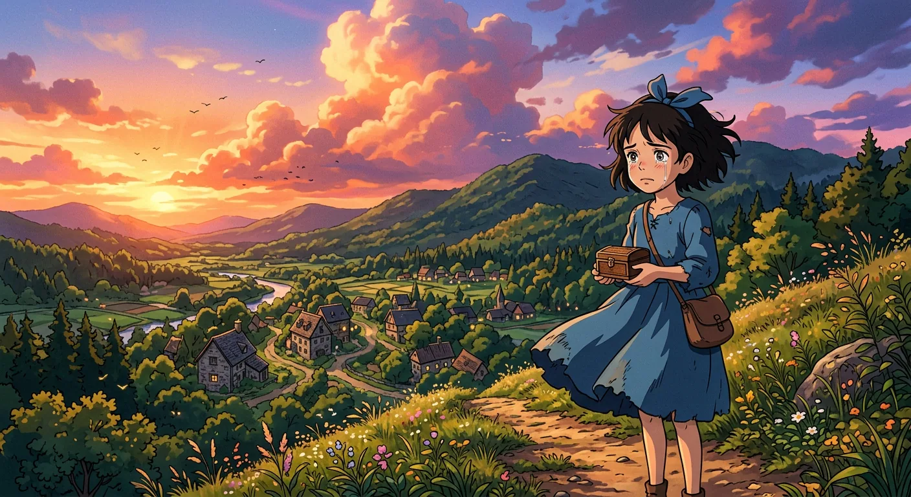
A Firelit Lecture on the Fourth Dimension
The story begins in a cozy room with a warm fire. A clever man called the Time Traveller sat with his friends. He had something amazing to tell them. He explained that everything has length, width, and height. But things also need time to exist! A box that lasts for no time at all is not really a box. So time must be like a fourth direction we travel through.
His friends were not so sure about this idea. Filby shook his head and argued back. The others tried hard to understand. But the Time Traveller kept explaining in his gentle, excited way. He said that when we remember things, we sort of travel back in time. What if someone could build a machine to really travel through time? His friends laughed and wondered what they might see in the past or future. Then the Time Traveller smiled and said he had built such a machine. He walked off to his workshop to bring back something wonderful to show them.
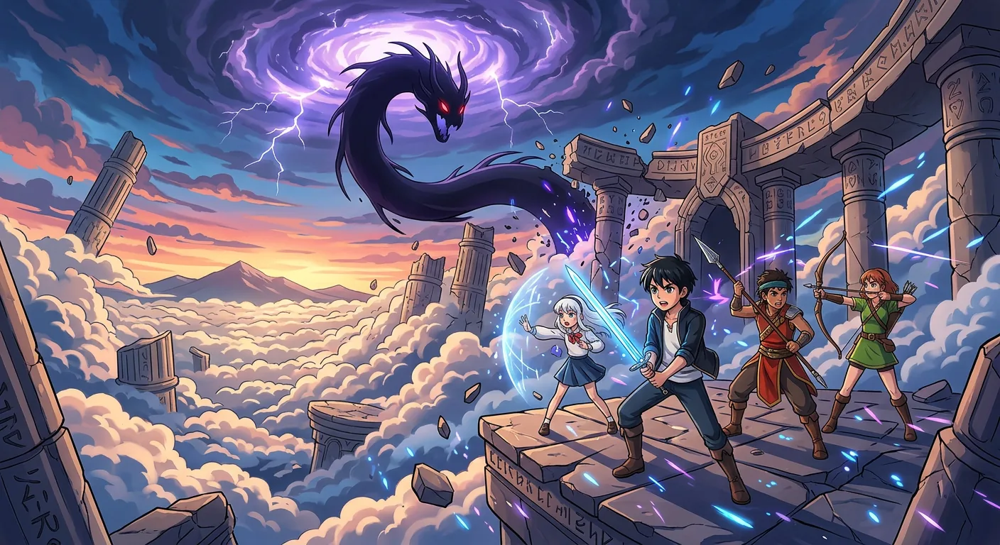
A Glittering Model Vanishes Into Time
The Time Traveller had made something special. It was a tiny machine that sparkled and gleamed. It sat on a small table near the warm fire. His friends gathered close to see what it could do.
The little machine had two tiny levers. One lever could send it forward in time. The other lever could send it backward in time. The Time Traveller asked one friend to press the lever. Everyone watched very carefully. The friend pushed the lever down. A little breeze blew through the room. One candle flickered out. Then something amazing happened! The tiny machine began to shimmer and glow. It got blurry and see-through like a ghost. Then it disappeared completely! The table was empty.
Everyone was so surprised they could not speak. Where did it go? The friends talked and wondered about it. Then the Time Traveller smiled and said he had a bigger machine in his workshop. He led his friends down a long hallway to see it. There it stood, shiny and beautiful, almost ready for a real journey through time.
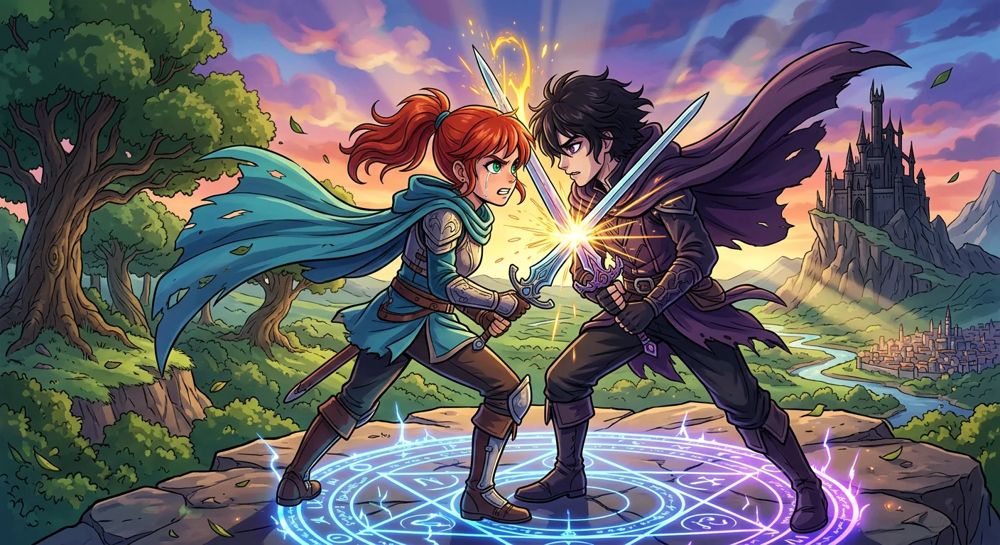
A Haggard Return From Beyond
The Time Traveller's friends came back to his house for dinner the next week. But when they arrived, he was not there! A note said to start eating without him. So they sat down and began their meal together.
Then the door opened slowly. The Time Traveller walked in, and he looked very tired and messy. His coat was dirty with green stains. His hair was wild and tangled. He had a small cut on his chin, and his feet were bare and sore. He looked like he had been on a very long, hard trip. His friends were so surprised to see him this way. He asked for something to drink and some food right away because he was very hungry. He promised to tell them everything after he cleaned up. When he came back downstairs, he said something amazing. He really had been travelling through time! He had been gone for eight whole days, even though it only seemed like a few hours to everyone else. Then he sat in his cozy chair and got ready to share his incredible story.
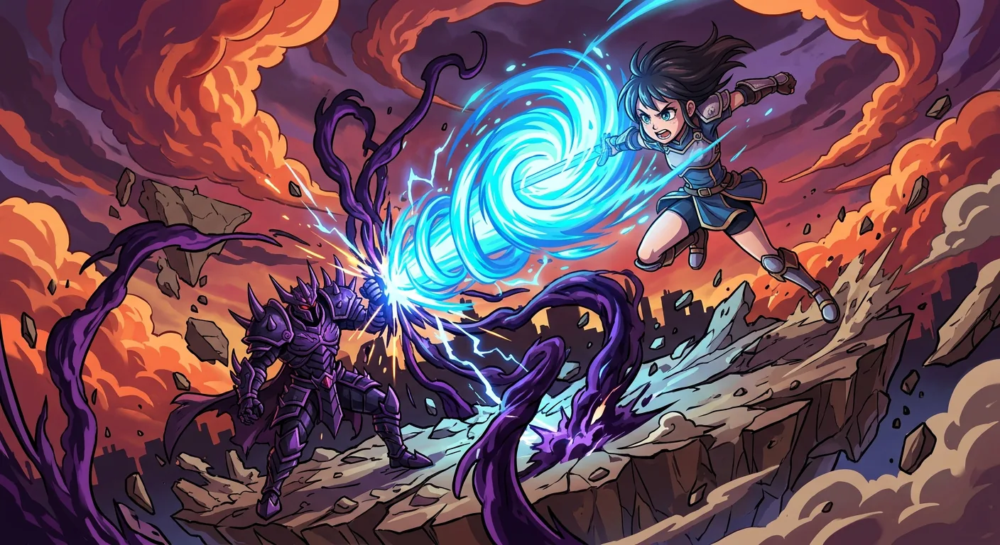
Night and Day Like a Black Wing
The Time Traveller told his friends about building his special machine. Some parts had broken and needed fixing, which took many days. But that very morning, the machine was finally ready to go!
He sat down in the seat and pushed the levers forward. His heart was beating fast with excitement and wonder. The machine really worked! He began to zoom through time, faster and faster. His helper walked across the room so quickly she looked like a blur. Day and night started flashing by like someone turning a lamp on and off, over and over. The sun became a bright streak across the sky. Trees grew tall and then disappeared like puffs of smoke. Snow came and went, and spring returned again and again in just seconds. Big beautiful buildings rose up and faded away like dreams.
Finally he stopped the machine and tumbled onto soft grass near purple flowers. A huge white statue shaped like a winged creature stood nearby, very old and worn. Then he saw small, gentle people in soft robes coming to meet him. They looked kind and delicate. He felt brave again and got ready to say hello to these new friends from the faraway future.
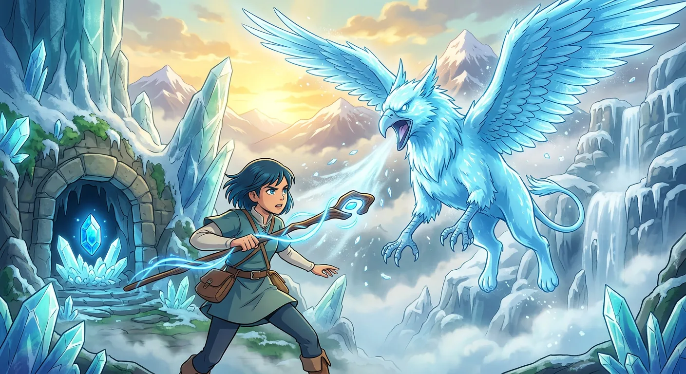
Fragile Inheritors of a Faded World
The Time Traveller met the people of the far future. They were small and gentle, with curly hair and big soft eyes. They touched his hands and shoulders very kindly. They wanted to see if he was real. He thought they were beautiful but also a bit strange. Their voices sounded like sweet music when they spoke.
He took a special part off his machine and put it in his pocket. He wanted to keep the machine safe. The little people gave him flowers until he was covered in pretty petals. They laughed and led him to a big old building made of grey stone. Inside, the floors were worn smooth and dusty curtains hung on the walls. It looked like it had been grand long ago. About two hundred of these gentle people sat on cushions eating fruit. The Time Traveller tried to learn their words by pointing at things. They giggled at his funny sounds but got tired of teaching him quickly. He could tell this peaceful world held many secrets waiting to be discovered.
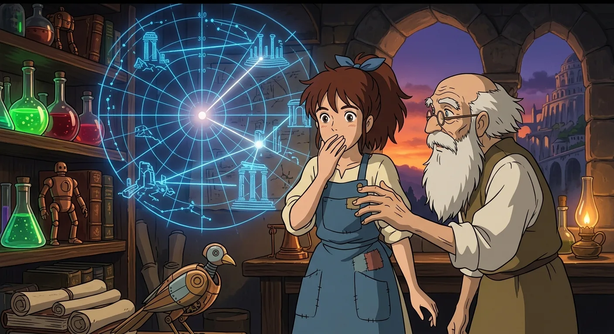
The Sunset of Mankind
The Time Traveller noticed something funny about his small new friends. They were curious like little children with a new toy, but they lost interest very quickly. Soon they wandered away, and he was left alone. So he stepped outside to explore this strange new world.
The evening sun made everything glow warm and golden. He walked up a big hill to see more of this faraway future. Everything looked so different from home. There were no little houses anywhere, only grand palace buildings covered in green plants and pretty flowers. The whole world looked like one giant garden.
The tiny people following him all looked almost the same. They seemed so gentle and happy, without any worries at all. The Time Traveller sat on an old metal bench and watched the beautiful sunset over the river. He thought he understood everything about this peaceful place. But he had a feeling there was still much more to discover.
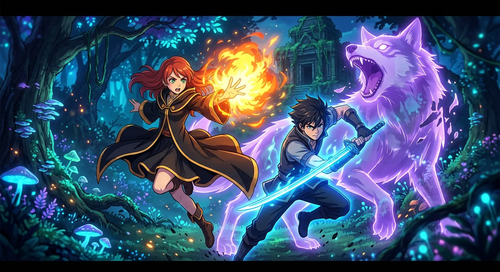
The Time Machine Vanishes
The Time Traveller stood on a hill and watched the big yellow moon rise. The night grew dark and cool. He looked down at the lawn where he had left his special machine. Something felt very wrong. His heart began to pound. The Time Machine was gone!
He ran down the hill as fast as he could. He looked everywhere, behind every bush, but the machine was not there. The white stone sphinx seemed to smile down at him. He felt so scared and so alone. How would he ever get back home? He searched all night until he was too tired to look anymore. He sat down and cried, then fell asleep.
When morning came, he felt a little better. He found marks in the grass leading to the sphinx. He knocked on its side and heard it was hollow inside. His machine must be hidden there! But the little people would not help him open it. So he decided to be patient, learn about this strange world, and watch for clues to get his machine back.
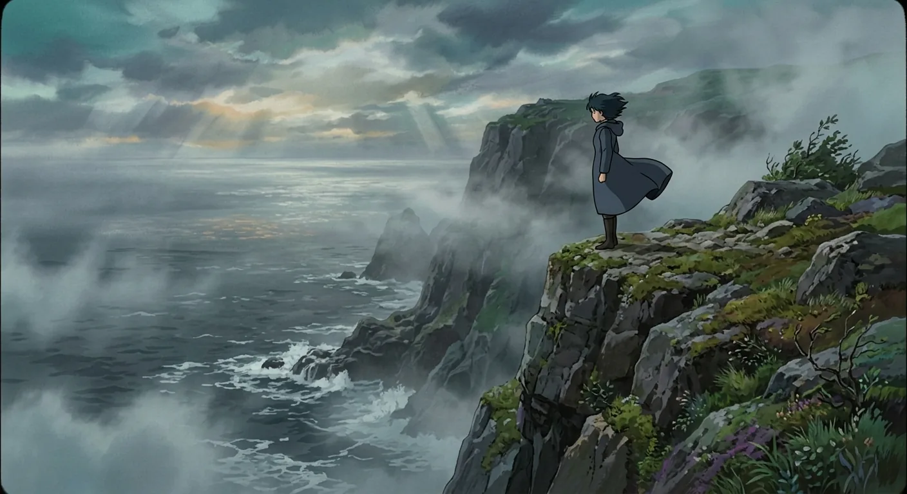
Mysterious Wells and Unanswered Questions
The Time Traveller explored a beautiful world full of pretty buildings and silver streams and trees covered in flowers. But he noticed something strange. All around were deep round wells made of bronze. When he looked down into them, he saw only darkness. He could hear a thumping sound far below, like a giant heartbeat. He wondered what could be down there.
The gentle little people called Eloi spent their days playing and eating fruit. But no one seemed to work or build anything. One day he saved a small person named Weena from a stream when she needed help. After that, Weena became his dear friend. She would bring him flowers and stay close to him. But Weena was very afraid of the dark. All the Eloi were scared when night came. They would huddle together inside the big buildings until morning light. The Time Traveller wondered why they were so frightened. He had so many questions about this strange new world.
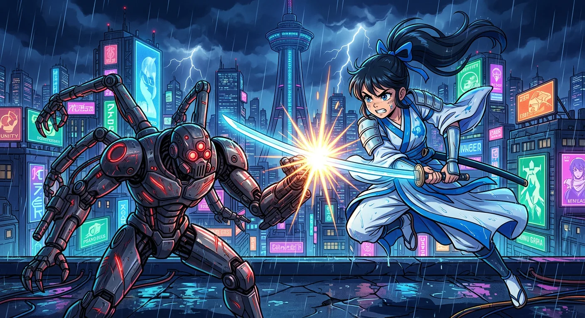
Descent Into the Underworld's Darkness
The Time Traveller felt worried for two whole days. He knew he needed to go underground to find his time machine. But the strange pale creatures who lived down there made him feel uneasy. He tried to rest, but his mind was too busy thinking.
One morning, he walked to a deep well with his friend Weena. She did not want him to go down into the dark. She held his hand and looked very sad. He gave her a gentle goodbye and started climbing down the long shaft. It was hard work, and his arms got very tired. At the bottom, he found a big cave full of humming machines. The pale creatures did not like light, so he used matches to see. When his matches started running out, he climbed back up as fast as he could. At last he reached the sunny world above. Weena was so happy to see him. She held his hands while he rested in the warm grass. His time machine was still down below, waiting to be found.
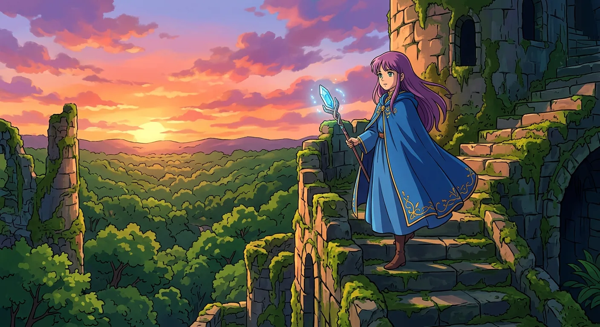
Fear Returns With the Waning Moon
The Time Traveller was starting to feel scared. The creatures underground called Morlocks made him very nervous. He did not want to be near them at all. His friend Weena had tried to tell him about the Dark Nights. Now he understood why the gentle Eloi people were so afraid when the sun went down. The moon was getting smaller each night, which meant more darkness was coming.
The Time Traveller decided he needed to be brave and make a plan. He wanted to find a safe place to stay and make tools to protect himself. He remembered a beautiful building called the Palace of Green Porcelain far away. So he and Weena set off walking toward it. Weena was happy and picked flowers along the way. She put them in his pockets, which made him smile. When night came, they rested on a hill under the stars. The sky looked different so far in the future, but it was still beautiful. In the morning they kept walking through a sunny green wood toward the palace.
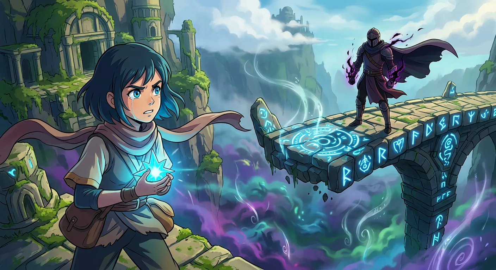
Ruins of a Forgotten Museum
The traveller and his little friend Weena walked to a beautiful old building called the Palace of Green Porcelain. It sat on a grassy hill and looked very old and worn. Big pieces of pretty green walls had fallen away over many years. When they went inside, they found a wonderful museum full of amazing things covered in dust. Giant bones of animals that lived long, long ago stood in the middle of the room. The traveller felt excited to explore such a special place.
They walked through many rooms filled with old treasures. Some rooms had machines with interesting parts. Other rooms had shelves where books had turned to crumbs after so much time. Then the traveller found something very helpful in a glass case. He found matches that still worked perfectly. He was so happy that he did a silly dance, and Weena laughed and clapped her hands. He also found special waxy stuff called camphor that could make bright light. Now he felt ready and brave for whatever adventure waited for him next.
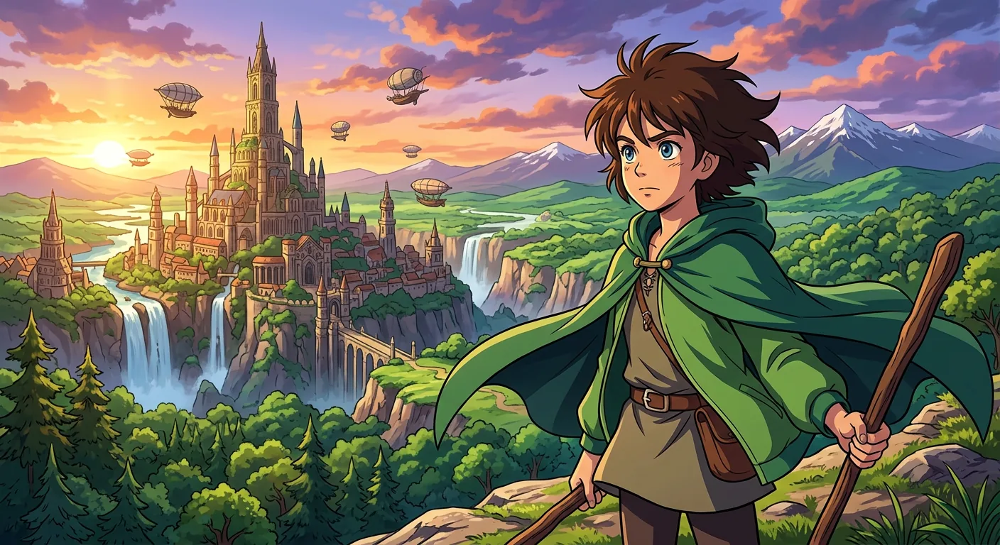
Fire and Flight Through the Forest
The Time Traveller and his little friend Weena left the palace when the sun was still up. They wanted to walk through a dark forest to get home. He picked up sticks to make a fire that would keep them safe at night. But carrying all those sticks made them very slow. Weena got tired, and he was tired too because he had not slept in a long time.
When it got dark, they reached the edge of the woods. Weena was scared of the darkness, but they kept going. The Traveller made a fire to help them see the way. Weena had never seen fire before and thought the pretty flames looked wonderful. They walked deeper into the trees, but soon they got lost. The night was very long and scary, with strange sounds all around them. When morning finally came, the Traveller was safe, but sweet little Weena was gone. He felt so sad and lonely without her. He put his hand in his pocket and found a few matches, then slowly walked on toward home all by himself.
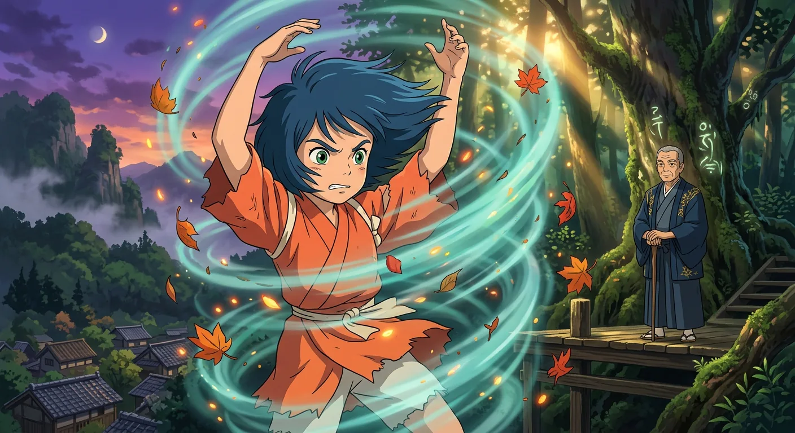
The Trap Sprung, The Escape Made
The Time Traveller sat on a yellow metal seat and looked out at the pretty world around him. He saw green trees, old palaces, and a shining river. The gentle Eloi people walked among the flowers in their bright clothes. He felt sad when he thought about his friend Weena. He now understood this world was not as happy as it seemed. The Morlocks lived underground and were not kind to the Eloi.
He walked toward a big white statue called the Sphinx. To his surprise, the doors were open! Inside sat his Time Machine, all cleaned up and waiting. He knew it was a trick, but he stepped in anyway. The doors slammed shut behind him, and everything went dark. He could hear the Morlocks coming closer in the blackness. His heart beat fast as he fumbled to fix the levers on his machine. Finally, he got them in place and pulled hard. The darkness faded away, and he was traveling through time again, leaving that strange world behind.
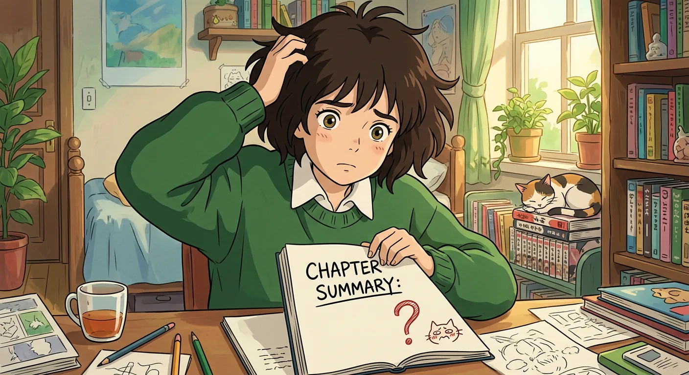
Earth's Final Twilight
The Time Traveller made a big mistake with his machine. He pushed the levers the wrong way by accident. Instead of going home, he went far, far into the future. The world looked very different there. The sky was not blue anymore. It was dark and red. The sun had grown huge and sat still near the edge of the sky. It glowed a deep red color like embers in a fireplace. The moon was gone, and the stars barely moved at all.
He stopped on a quiet beach by a very still sea. The rocks were reddish, and strange green plants grew on them. The air felt thin and hard to breathe. He saw some very odd creatures there, like big crabs with long feelers. They made him feel uneasy, so he quickly traveled even further ahead. Now everything was cold and snowy. The sea looked dark and icy. Almost nothing was alive anymore. The Traveller felt scared and lonely in this quiet, frozen world, and he knew he needed to find his way back home.
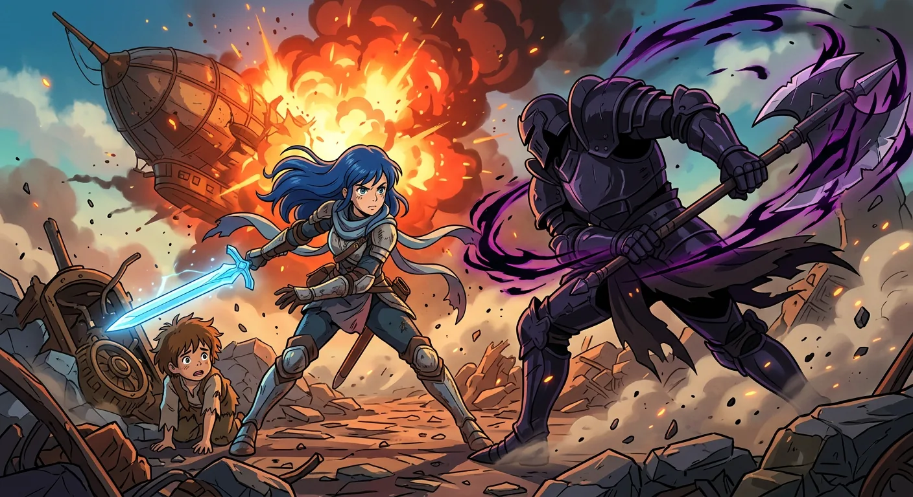
Rewinding Through Time to Home
The Time Traveller was coming home at last. He sat on his special machine and watched the world change around him. Days and nights blinked on and off like a lamp. The sun grew bright and golden again. The sky turned back to a lovely, friendly blue. He saw houses appear, then change into other houses, then change again and again as time rewound like a ball of yarn rolling backward.
Finally, the walls of his own workshop appeared around him. He was home! He climbed off his machine with wobbly, tired legs. His body ached and he was covered in dust from his long adventure. For a while he just sat and shivered, thinking about all the strange and wonderful things he had seen. Then he heard his friends talking in the dining room. He smelled something yummy cooking. He was so very hungry! So he washed up, joined his friends for dinner, and began to tell them his amazing story.
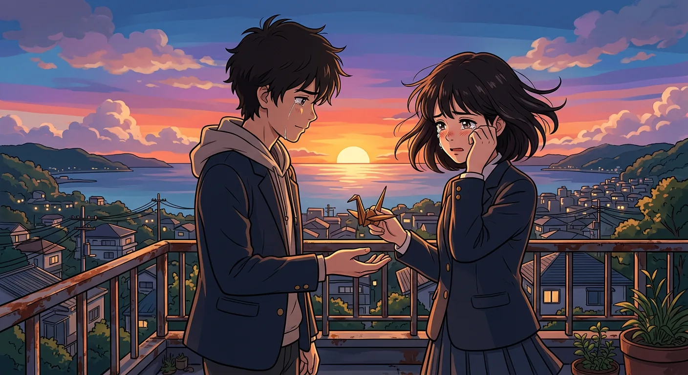
Doubt, Evidence, and Departure
The Time Traveller finished telling his amazing story. His friends sat quietly, not sure what to believe. He showed them two pretty white flowers on the table. They were a gift from his friend Weena, who lived far in the future. He would not let anyone take them away.
Some guests thought he made the whole thing up. But one friend, the storyteller, was not so sure. He came back the next day to visit. The Time Traveller was packing a camera and a bag. He wanted to bring back proof from another trip through time. He asked his friend to wait just a little while.
But then something strange happened. There was a whooshing sound and a flash. The machine and the Time Traveller disappeared! Three years have passed now, and he has not come home. His friend still keeps those two small white flowers. They remind him that kindness and love are always worth remembering.
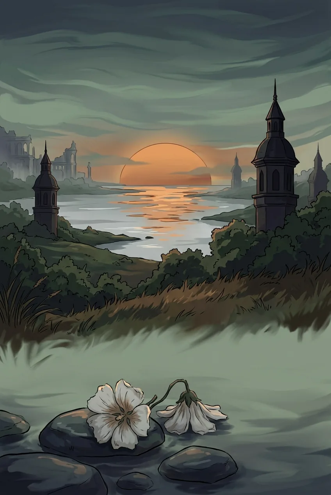